Introduction
Babi jewelry - Prestashop Theme
Created by: babithemes
Thank you for purchasing our theme. If you have any question, please contact us via Addons Prestashop contact or Email (contact@babithemes.com) form to be the best support.
In this user guide, you will find all neccessary information to upload your site and make it run well: including theme installation and setup, usage of different post types, and page templates.
Also note that this is combined manual for our multipurpose themes that shares similar back- and front-end features. Therefore, some screenshots, interfaces and features may slightly different from actual ones displayed in theme you've purchased.
Requirements & Compatibility
Our themes are compatible with the Prestashop versions 1.7 or later ( PHP 5 or later, and mysql 5 or later).
Most Browsers enabled JavaScript will work without issues. They are designed and optimized for desktops, tablets and smartphones.
Currently we are testing themes in:
- Google Chrome (Mac and PC)
- Firefox (Mac and PC)
- Internet Explorer 9 and later
- Safari (Mac and PC)
IMPORTANT!!!
- Make sure that your web host has the minimum requirements to run Prestashop
- Always make sure they are running on the latest version of Prestashop
- You can download the latest version released Prestashop on official Prestashop website
- Always create secured passwords FTP and Database
NOTE!
- Prestashop April can run well in version 1.7.2.4 So should consider before upgrade higher version.
- If you want upgrade your site to Prestashop version 1.7.x, Please backup your database before upgrade. Because script update of Prestashop version 1.7.x has an error that it deletes all your database and make your site empty. After run script update please import old database again.
Installation theme package with installator
Quickstart installation
1. Start installation by opening browser and navigate to your URL to load default Prestashop installer. Please follow these steps of the Installer so that the installation process can be set.
2. Please select the installation language
Please note: The installation language option will not affect your store language. By default PrestaShop is offered in English. You can install additional localization packages to change the store language.

3. When you are done, click the ‘Next’ button.
- Installation Assistant (License agreements)
- Please check the license agreement.

4. When you are done, click the ‘Next’ button.
- Checking PrestaShop Compatibility
In this step, you could check if PrestaShop was compatible with your system environment.
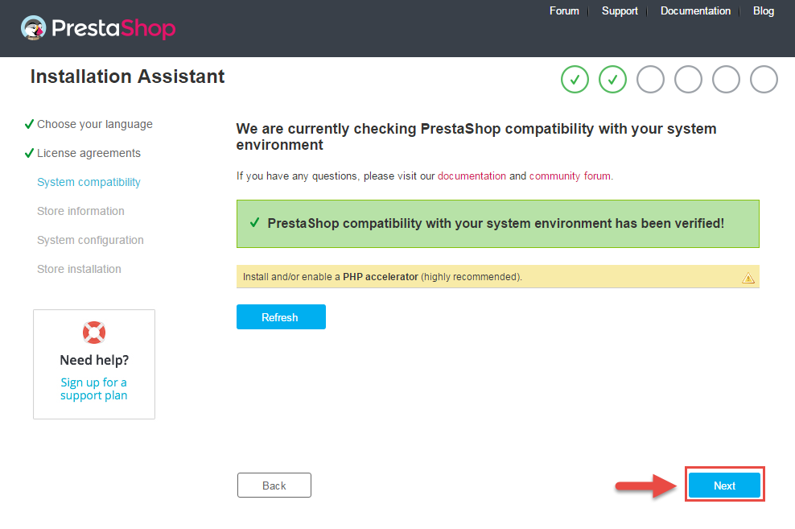
5. When you are done, click the ‘Next’ button.
- Store Information
6. Now add required information for your store: Shop name, Main activity, Country, Shop timezone and add the account info: first name, last name, email and password. Click “Next” to next step.

7. When you are done, click the ‘Next’ button.
- System Configuration
8. Here is the database configuration panel, we need to create database first.

9. Access your database panel and create database for your site. Add database name and then click “Create” button.

10. When the database is created successfully, copy and paste its name into the “Database name” field, then click the “Test your database connection now!” button to make sure that the entered settings are correct. If they are, you will see a Database is connected message. After that, you could click the “Next” button to move to next steps.
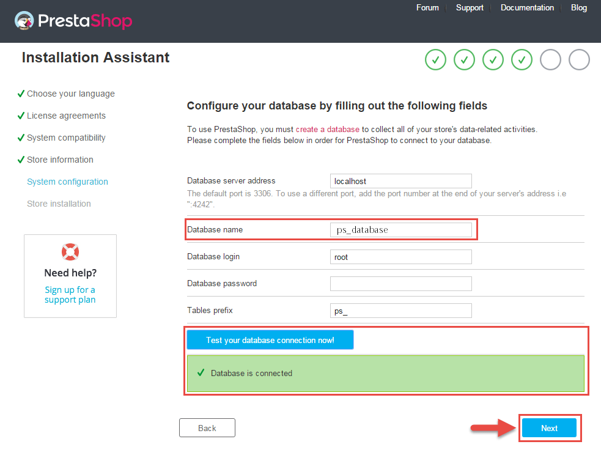
- Finish installation: This process could take a few minutes
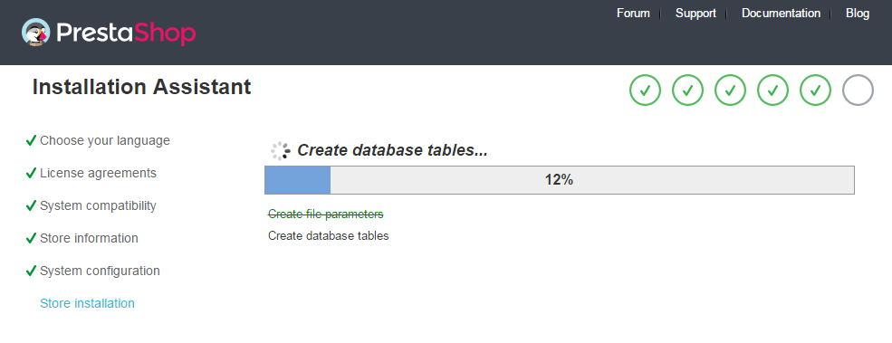
Note: For security reasons you need to delete the install/ directory on your hosting server.
11. And finally, go to the Frontend or Backend as you want:

12. Using package babi_themes.zip
Theme Installation
1. Login to your Prestashop admin panel and navigate to IMPROVE >> Design >> Theme & Logo. At the top of the page click the Add a new theme button.

2. In section IMPORT FROM YOUR COMPUTER, select your theme package and click on Save

3. After, go to " SELECT A THEME FOR SHOP ", click on "Use this theme" as described in image below
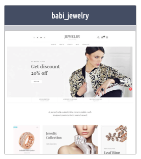4. Refesh your site in front-end. Installation process for theme finishes.
Notes after install theme
To make sure this theme will work well, you need check:
- - See result in front-end, if the result is not the same as demo, go to Advanced Parameters > Performance, click on "Clear cache" on the toolbar to Clear Smarty cache. 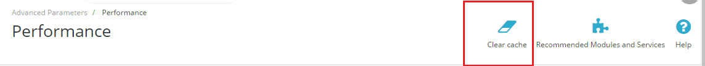
Languages and Translation
- Go to Localization > Translations to add (update) and translate language.
- View part "MODIFY STRANLATIONS" to translate or modify transitions
- View section "ADD/UPDATE A LANGUAGE" to add or update language

Management & Pages
2. Logo block
Backend Settings:
In the Prestashop Admin Panel, navigate to Design >> Theme & Logo >> Tab Logo >> Click "Add file" to change.
3. Header right blog
- Cart Block
Backend Settings:
In the Prestashop Admin Panel, navigate to IMPROVE >> Modules >> Modules and Services >> Installed Modules look for “Shopping cart” module.
- Menu vertical Block
Backend Settings:
In the Prestashop Admin Panel, navigate to IMPROVE >> Modules >> Modules and Services >> Installed Modules look for “Shopping cart , Contact information ,Currency block” module.
4. Babi menu
Backend Settings:
Step 1: In the Prestashop Admin Panel, navigate to IMPROVE >> Modules >> Modules and Services >> Installed Modules look for “ Babi Menu” module.
Step 2: You could follow guide here to configure this module .
5.Babi Slider
Backend Settings:
Step 1: In the Prestashop Admin Panel, navigate to IMPROVE >> Modules >> Modules and Services >> Installed Modules look for “ Babi Slider ” module.
Step 2: You could follow guide here to configure this module .
6. Custom text blocks
Backend Settings:
Step 1: In the Prestashop Admin Panel, navigate to IMPROVE >> Modules >> Modules and Services >> Installed Modules look for “ Custom text blocks ” module.
Step 2: You could Add this code to show demo:
<div class="home-intro-service"> <div class="container"> <div class="row"> <div class="intro-service-content"> <div class="service-item col-md-4 wow fadeInUp animated" style="visibility: visible; animation-name: fadeInUp;"> <p class="title">Free shipping</p> <p class="caption">All order over $300</p> </div> <div class="service-item col-md-4 wow fadeInUp animated" style="visibility: visible; animation-name: fadeInUp;"> <p class="title">Support customer</p> <p class="caption">Support 24/7</p> </div> <div class="service-item col-md-4 wow fadeInUp animated" style="visibility: visible; animation-name: fadeInUp;"> <p class="title">Secure payments</p> <p class="caption">Support 24/7</p> </div> </div> </div> </div> </div> <div class="home-intro-title wow fadeInUp animated" style="visibility: visible; animation-name: fadeInUp;"> <div class="container"> <div class="row"> <div class="intro-title-content">It started with a simple idea: Create quality, well-designed products that I wanted myself.</div> </div> </div> </div>
7. Babi homeStatic
Backend Settings:
Step 1: In the Prestashop Admin Panel, navigate to IMPROVE >> Modules >> Modules and Services >> Installed Modules look for “ Babi homeStatic ” module.
Step 2: You could configure this module like the illustration
8. Babi products
Backend Settings:
Step 1: In the Prestashop Admin Panel, navigate to IMPROVE >> Modules >> Modules and Services >> Installed Modules look for “Babi products” module.
Step 2: You could configure this module like the illustration
10. Babi testimonial
Backend Settings:
Step 1: In the Prestashop Admin Panel, navigate to IMPROVE >> Modules >> Modules and Services >> Installed Modules look for “Babi testimonial ” module.
Step 2: You could configure this module like the illustration
11. Babi Brands
Backend Settings:
Step 1: In the Prestashop Admin Panel, navigate to IMPROVE >> Modules >> Modules and Services >> Installed Modules look for “Babi Brands ” module.
Step 2: You could configure this module like the illustration
12. Babi blog
Backend Settings:
Step 1: In the Prestashop Admin Panel, navigate to IMPROVE >> Modules >> Modules and Services >> Installed Modules look for “ Babi blog” module.
Step 2: You could configure this module like the illustration
13. CopyRight Block
Backend Settings:
Step 1: In the Prestashop Admin Panel, navigate to IMPROVE >> Modules >> Modules and Services >> Installed Modules look for “ Link List ” module.
Step 2: You could configure this module like the illustration
14. Link List Block
Backend Settings:
Step 1: In the Prestashop Admin Panel, navigate to IMPROVE >> Modules >> Modules and Services >> Installed Modules look for “Babi Dashborad” module.
Step 2: You navigate this module >> Template Setting >> copyright to change
15. Newsletter Block
Backend Settings:
In the Prestashop Admin Panel, navigate to IMPROVE >> Modules >> Modules and Services >> Installed Modules look for “ Babi Newsletter ” module.
16.Social Block
Backend Settings:
Step 1: In the Prestashop Admin Panel, navigate to IMPROVE >> Modules >> Modules and Services >> Installed Modules look for “Babi Dashborad” module.
Step 2: You navigate this module >> Social to change
Babi Category
1. In your Prestashop Admin Dashboard, navigate to IMPROVE >> Modules >> Modules and Services >> go to Installed modules section, search for “Babi Category” module then click on Configure.
2. In the “Babi Category” configuration page, click 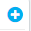 button in the right corner to “ADD NEW MODULE”.
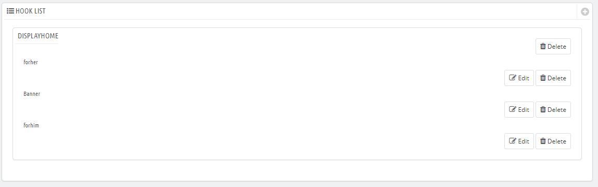
3. You could configure this module like the illustration
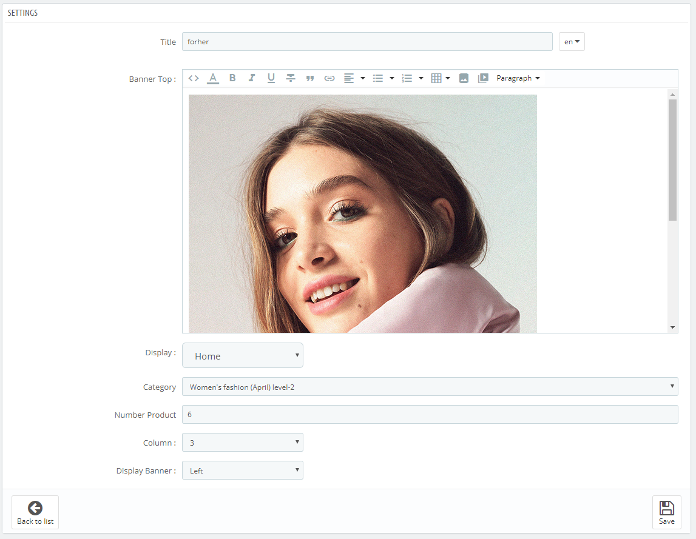
Banner 2 Columns
1. In your Prestashop Admin Dashboard, navigate to IMPROVE >> Modules >> Modules and Services >> go to Installed modules section, search for “Banner 2 Column” module then click on Configure.
2. You could configure this module like the illustration
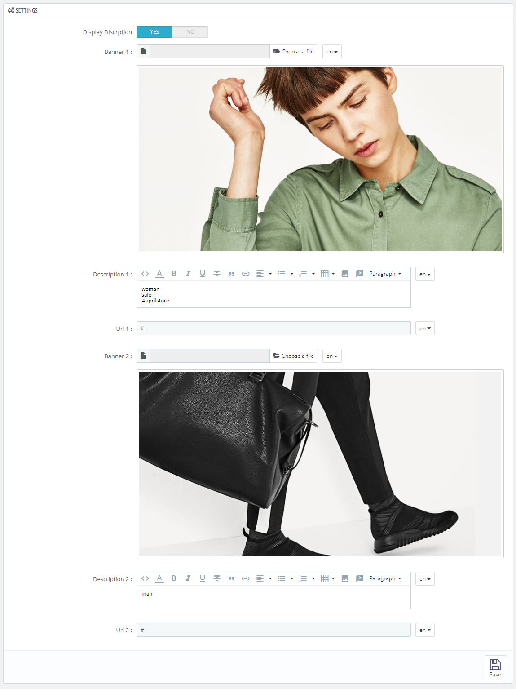
Babi Theme Configuration
General Setting
1. In your Prestashop Admin Dashboard, navigate to IMPROVE >> Modules >> Modules and Services >> go to Installed modules section, search for “Babi Dashborad ” module then click on Configure.
2. In the Babi Dashborad , choose “General” to configure the parameters in this section. After finishing, you could go to the front-end to view the changes.
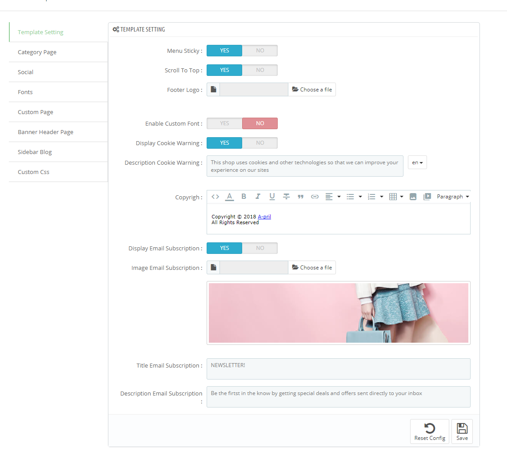
Category Page Setting
1. In your Prestashop Admin Dashboard, navigate to IMPROVE >> Modules >> Modules and Services >> go to Installed modules section, search for “Babi Dashborad” module then click on Configure.
2. In the Babi Dashborad, choose “Category Page” to configure the parameters in this section. After finishing, you could go to the front-end to view the changes.

Social Setting
1. In your Prestashop Admin Dashboard, navigate to IMPROVE >> Modules >> Modules and Services >> go to Installed modules section, search for “Babi Dashborad” module then click on Configure.
2. In the Babi Dashborad , choose “Social” to configure the parameters in this section. After finishing, you could go to the front-end to view the changes.
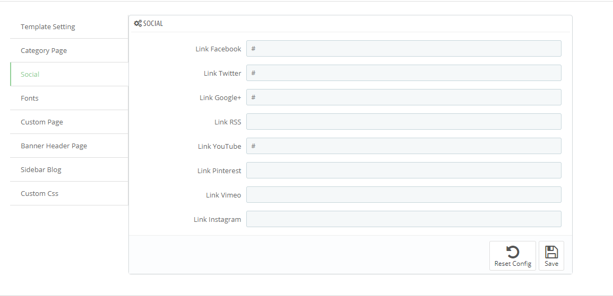
Fonts Setting
Custom Page Setting
1. In your Prestashop Admin Dashboard, navigate to IMPROVE >> Modules >> Modules and Services >> go to Installed modules section, search for “Babi Dashborad” module then click on Configure.
2. In the Babi Dashborad , choose “Custom Page” to configure the parameters in this section. After finishing, you could go to the front-end to view the changes.
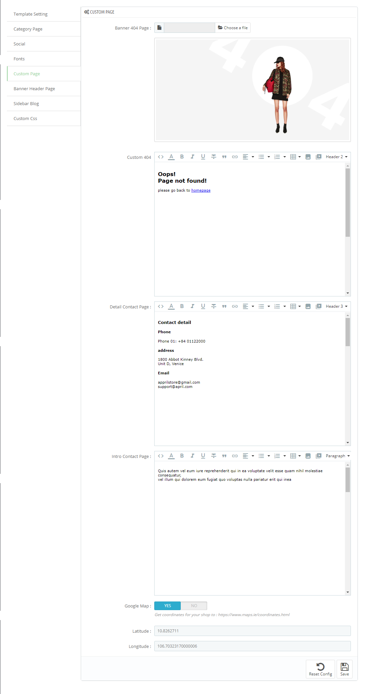
Banner Header Setting
1. In your Prestashop Admin Dashboard, navigate to IMPROVE >> Modules >> Modules and Services >> go to Installed modules section, search for “Babi Dashborad” module then click on Configure.
2. In the Babi Dashborad , choose “Banner Header” to configure the parameters in this section. After finishing, you could go to the front-end to view the changes.
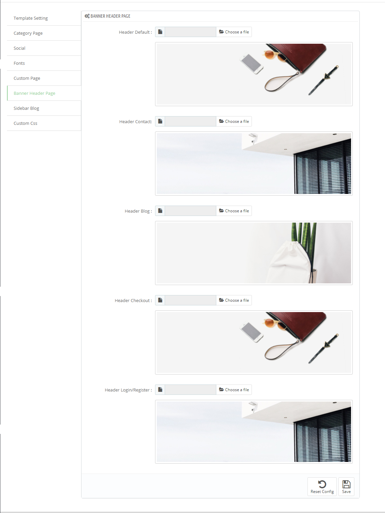
Sidebar Blog Page Setting
1. In your Prestashop Admin Dashboard, navigate to IMPROVE >> Modules >> Modules and Services >> go to Installed modules section, search for “Babi Dashborad” module then click on Configure.
2. In the Babi Dashborad , choose “Sidebar Blog” to configure the parameters in this section. After finishing, you could go to the front-end to view the changes.
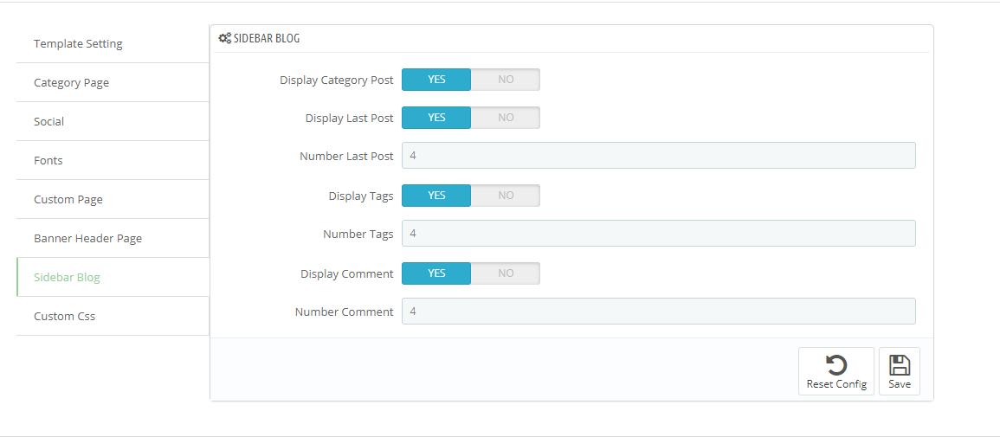
Custom Css
1. In your Prestashop Admin Dashboard, navigate to IMPROVE >> Modules >> Modules and Services >> go to Installed modules section, search for “Babi Dashborad” module then click on Configure.
2. In the Babi Dashborad , choose “Custom Css” to configure the parameters in this section. After finishing, you could go to the front-end to view the changes.
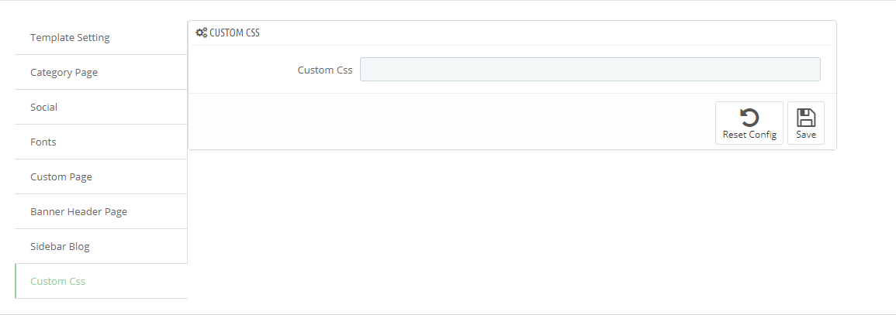
Management Blog
- In back-end, blog menus are displayed after this module is installed.
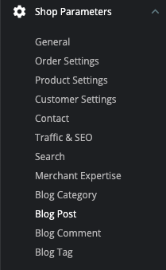Create blog category
- In back-end go to "Babi Blog > Blog Category" to view the screen of main managemant for the blog category.
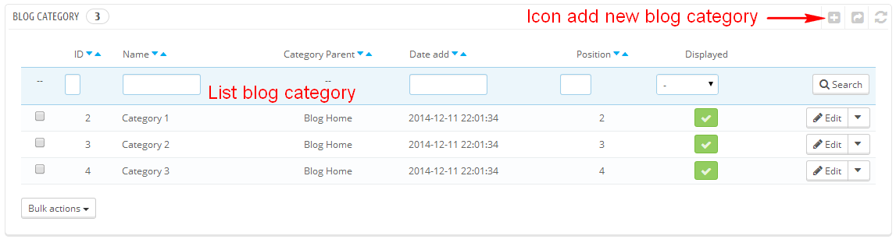- Create blog category item : Click icon add new blog category on the screen of main management for the blog category and then view the interface of creating blog category. Enter information for blog category.
- Name : Name of blog category (not leave it empty)
- Displayed : Disable/enable category display in frontend
- Catergory Parent : Choose category parent
- Allow comment : Disable/enable comment function of post item in this category
- Description : Description of category
- Image : Image for category
- Meta title : Public title for the category's page, and for search engines.
- Meta description : This description will appear in search engines.
- Meta keywords : Keyword will appear in search engines
- Friendly URL : This is the human-readable URL, as generated from the category's name. You can change it if you want.

Create blog post
- In back-end go to "Babi Blog > Blog Post" and then view the screen of main management for the blog post.

- Create blog post item : Click icon add new blog post on the screen of main management for the blog post and then view the interface of creating blog category. Enter information for blog post.
- Title : Title for post (not leave it empty)
- Categories : choose categories for post
- Displayed : Disable/enable post display in frontend
- Description short : Description short for post
- Description : Description of post
- Allow comment : Disable/enable comment function of post
- Author : Select author of post
- Image : Image for post
- Related Posts : config related posts for post
- Related Products : config related products for post
- Tags : add tags for post. One post can contain many tags.
- Meta title : Public title for the post's page, and for search engines.
- Meta description : This description will appear in search engines.
- Meta keywords : Keyword will appear in search engines
- Friendly URL : This is the human-readable URL, as generated from the post's name. You can change it if you want.

Manage blog tag and blog comment
1. Blog tag
- In back-end go to "Babi Blog > Blog Tag" to view the screen of main management for the blog tag.

- Create blog post item : Click icon add new blog tag on the screen of main management for the blog tag and then view the interface of creating blog tag. Enter information for blog tag.
- Name : Enter tag name
- Language : Select language for tag
- Post : Select posts item contain this tag

2. Blog comment
- In back-end go to "Babi Blog > Blog Comment" and then view the screen of main management for the blog comment. This screen is to view all comments for blog post.
Config blog option
- In back-end, go to Modules > Modules and find module "Babi Blog"
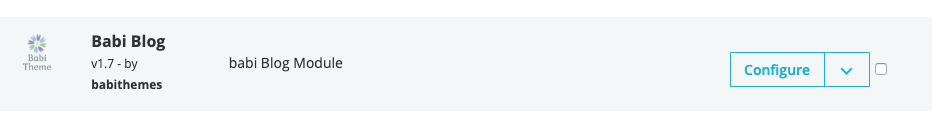- Interface of module in back0end, this module can be configured :
- Tab General Setting : config main link for blog
- Tab Page Blog List : config options for page blog of category
- Tab Page Blog Detail : config option for page blog of post
- Tab Image Setting : config image size for post and category
- Tab Hook : Get Content to display in each hook

- Creating menus parent - creating menus item
- Creating dropdowns for each menu item - creating row item
- Creating content for dropdown - creating column item
- Config display of module on ipad device
1. Creating menus parent - creating menus item
- Click on icon add new menu item from the main screen of module and then view the interface of creating new menu item.
- The interface of creating new menu item. Information is required to enter for menu item.
- Title : name to display for menu item (not leave it empty)
- Link of title : link to menu item
- Icon : select icon for menu item
- Label text : add label text for menu item . EX : hot, new, sale, ...
- Label color background: set background color for label
- Columns of dropdown : select column for menu item from 5 to 1

- Click on Save to create menu item
2. Creating dropdowns for each menu item - creating row items
- Can only create row items after created menu item.
- With each menu item can have many row items
- Form list of menu item, click on button View detail to create dropdown for menu item that you want to add dropdown

- Then, click on button Add row to view the interface of adding new row

- In that interface, enter information for row item
- Height : Setting height for row item. Using height row incase, you want to set background or fixed height for row item. Set value at 0 or leave it empty to set "auto" for height.
- Background color : Setting background color for row item
- Background image : Setting background image for row item

- Click on Save to create row item
3. Creating content for dropdown - creating column item
- Only can create column items after creating row item.
- Each row item can have many column items.
- Form list of menu item, click on button View detail to create dropdown for menu item that you want to add dropdown
- Then, click on button Add column for row and view the interface of adding new column
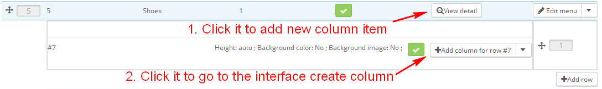- In that interface, enter information for column item and for column:
- Number of columns : Setting number for column from 1 to 5.
- Tyle of column : Select content for column, you can select :
- category
- product
- static block
- manufacture
- information
- Part content config for each type column : With each column type, it will have content config different.

- Click Save to create row item
4. Config display of module on ipad device
Config number of items displayed on ipad horizontal and ipad vertical
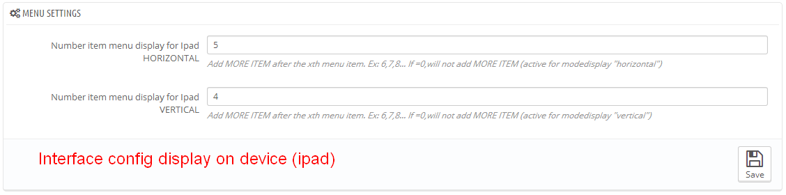Manage main slideshow
-In your backoffice, go to Modules > Modules > Other modules > Babi Slider > Configure.
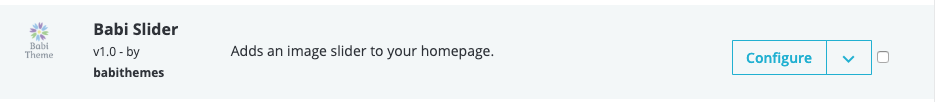-Add slides

-List of the available slider options

-Edit slide

-Add / Edit layer for slide

-Layer general
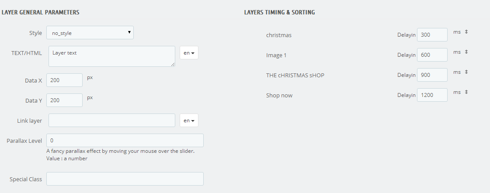DeplayIn: Delays the layer transitions with the specified amount of time in milliseconds.
-Layer transitions
Theme support
- If our theme has any problem, please please contact us email contact@babithemes.com to be the best support.
- When you contact us, please send us order id, ftp account, admin account so that we can check your issue.
Regards!